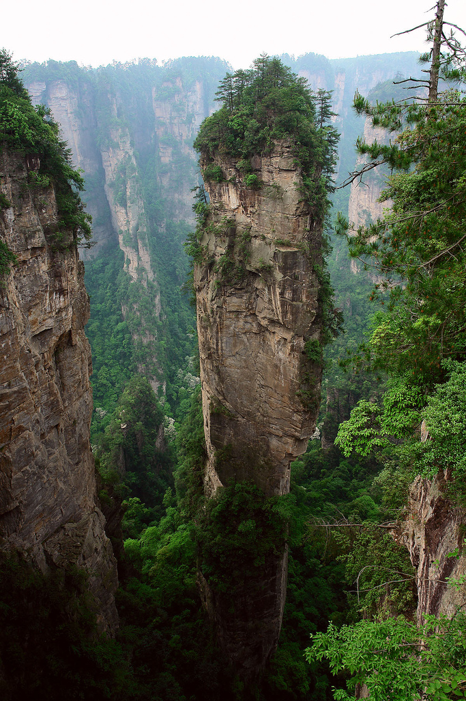

A China não é só Pequim!
É uma muitíssima pena que, quando se pensa na China, pensa-se só naquela visão orientalista do lugar, com sons de gongues, monges shaolin, e a Muralha da China. Isso é o mesmo que querer vir visitar o Brasil, e visitar apenas o Rio! Quando existem beldades como Guaramiranga, ou Salvador (apesar dessa ser famosinha), ou Ouro Preto... meu ponto é, existem lugares muito maneiros na China que não são conhecidos!
Como as plantações de arroz de Honghe!

Ou o Parque Nacional de Zhangjiajie!
Ou o parque nacional de Zhangye!
Apesar de que, infelizmente, não falaremos a fundo de nenhum desses... mas fica aí a recomendação de lugares de pesquisa!